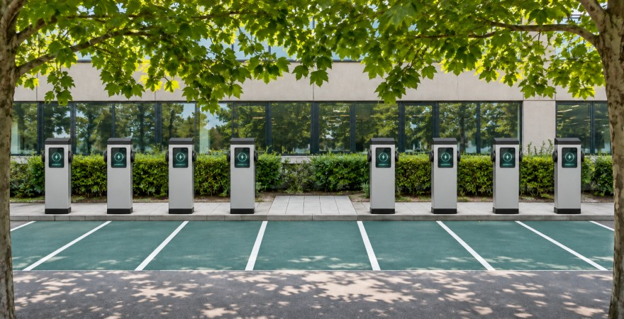

Quiénes somos
Somos la sección sindical de STR-IG. Representamos a la plantilla y defendemos sus derechos e intereses ante la empresa.
En qué estamos trabajando
Recogemos las inquietudes y propuestas de la plantilla, las trasladamos a la empresa y damos seguimiento a los acuerdos.
Nuestros logros
Reconocimiento económico y condiciones laborales
- Prima COVID. STR propuso la fórmula de la prima, la afiliación la votó y la empresa la aceptó.
- Pluses especiales navideños. Siguen vigentes.
Movilidad sostenible
- Cargadores para vehículos eléctricos.

Seguridad y salud laboral
- Calzado de seguridad.
- Cazadoras amarillas de alta visibilidad.